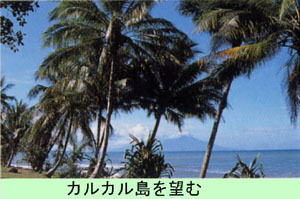

|
第７４ 本国に帰還命令
 乗船場一帯にはヤシの木が沢山茂っていて、湾内の波も静かで、一見のどかな風景がそこにありました。猛軍で設営した衛生司令所には、 この戦場では滅多に見たことが無かった軍医さんと衛生兵がきびきびした動作で、立働いていて吃驚してしまいました。医薬品は敵の連合 国側から貰ったのでありましよう。衛生兵が患者に注射している！軍医さんはてきぱきと指示している。はたから見ていて気持のよい風景でありました。ここに集まって来 た兵士達は、只もう皆わくわくして嬉しそうでした。その内に、軍医さんが 『マラリヤの薬（キニーネ）は、日本に持ち帰ってはならない』 と注意しました。私共は、持ってはいませんでしたが、どうしてだろう？と、思ってみましたが、そんな事より早く日本に帰りたい、とい う気持ちの方が遥かに強く、じーっと乗船の順番が来るまで、黙ってヤシ林の下に屯していました。 帰還船に乗船する順番が来ました。直ちに乗船出来ると思っていましたが、その前に所持品の検査がヤシ林の中で始まりました。敵の兵 士が七八人横一列に間隔を置いて並んでいて、日本軍兵士の所持品検査を始めました。 私共は順番に一人づつ、横一列に並んでいる敵の兵士の前に進み出て、検査を受けなければなりません。いよいよ私の順番が来ましたの で豪州兵の前に進み出ました。私も所持品を敵兵の前の草むらの上に並べました。敵兵はそれを見届けてから私に 『後ろを向け』 と言いましたので私は回れ右して、敵兵に背を向けました。暫くしてからＯＫという。また、回れ右して敵兵と向かい合い、さっき広げた 私の所有物であるベークライトの食器とか汚れた毛布などを「ざつのう」に入れました。ところが、肌身放さず大事に持ち歩いていたセイ コ舎の腕時計が有りません。私の目の前に立っている豪州兵が盗んだのであります。抗議してもよかったが、若し抗議したら物議をかもし 面倒になるだけです。この野郎！憎い奴だと思いましたが、黙って荷物を片付け急いで乗船しました。この時、『戦争に負けたんだ』とい う実感をしみじみと味わいました。 戦後四十年たった今でも、この時の悔しい情景は忘れていません。心を入れ替え、腕時計ひとつが何だ！それよりも早く日本に帰還して、 祖国日本の為に働く事がもっと大事な事である。セイコーの腕時計一つ位はくれてやれと自覚し諦めました。 この時、持ち帰ったベークライト製のお椀は母が『安さんの形見だ』と、いって何時までも大切に保管していたと言う事を、兄嫁から知ら されました。『深い親心』をしみじみと味わいました。 |